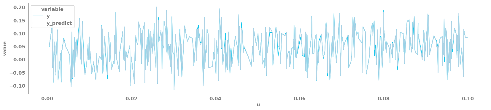

Using a non-linear model to fit to predictors and predict a target¶
This is an example of a single input single output system (SISO)¶
[19]:
import pandas as pd
import numpy as np
import os
current_wd = os.getcwd()
os.chdir(current_wd.split("scikit-identification")[0] + "scikit-identification")
from skmid.integrator import RungeKutta4
from skmid.model_training import DynamicModel, LeastSquaresRegression
from skmid.models import generate_model_attributes
os.chdir(current_wd)
import matplotlib.pyplot as plt
import seaborn as sns
from sklearn.metrics import mean_squared_error
[12]:
if "skmid" in plt.style.available:
plt.style.use("skmid")
Read in the data¶
[2]:
df = pd.concat([pd.read_csv("../data/non_linear_model/u_data.csv", index_col=0),
pd.read_csv("../data/non_linear_model/y_data.csv", index_col=0)], axis=1)
Y = df[["y"]]
U = df[["u"]].dropna()
Define the model (generate the attributes, and set the model with the defined attributes)¶
[3]:
(state, input, param) = generate_model_attributes(
state_size=2, input_size=1, parameter_size=4
)
y, dy = state[0], state[1]
u = input[0]
M, c, k, k_NL = param[0], param[1], param[2], param[3]
rhs = [dy, (u - k_NL * y**3 - k * y - c * dy) / M] # this is where the main equation is defined
model = DynamicModel(
state=state,
input=input,
parameter=param,
input_name=["u"],
parameter_name=["M", "c", "k", "k_NL"],
state_name=["y", "dy"],
output=["y"],
model_dynamics=rhs,
)
Define the input settings¶
[4]:
settings = {
"N": 10000,
"fs": 610.1,
"param_truth": [5.625e-6, 2.3e-4, 1, 4.69],
"param_guess": [5, 2, 1, 5],
"scale": [1e-6, 1e-4, 1, 1],
"n_steps_per_sample": 10,
"initial_condition": [0, 0]
}
Call the estimator (here Least Squares Regression is used)¶
[5]:
fs = settings["fs"]
n_steps_per_sample = settings["n_steps_per_sample"]
estimator = LeastSquaresRegression(
model=model, fs=fs, n_steps_per_sample=n_steps_per_sample
)
Create initial condition¶
[6]:
Yg = Y.values[1:]
yd = np.diff(Yg, axis=0) * fs
yd = np.concatenate([yd, yd[-1].reshape(1, -1)], axis=0)
state_guess = np.concatenate([Yg, yd], axis=1)
Estimate parameters¶
[7]:
param_guess = settings["param_guess"]
scale = settings["scale"]
Fit the model¶
[8]:
estimator.fit(
U=U, Y=Y, param_guess=param_guess, param_scale=scale,
state_guess=state_guess
)
just-in-time compilation with compiler= "shell"
******************************************************************************
This program contains Ipopt, a library for large-scale nonlinear optimization.
Ipopt is released as open source code under the Eclipse Public License (EPL).
For more information visit http://projects.coin-or.org/Ipopt
******************************************************************************
This is Ipopt version 3.12.3, running with linear solver mumps.
NOTE: Other linear solvers might be more efficient (see Ipopt documentation).
Number of nonzeros in equality constraint Jacobian...: 139986
Number of nonzeros in inequality constraint Jacobian.: 0
Number of nonzeros in Lagrangian Hessian.............: 110010
Total number of variables............................: 20004
variables with only lower bounds: 0
variables with lower and upper bounds: 0
variables with only upper bounds: 0
Total number of equality constraints.................: 19998
Total number of inequality constraints...............: 0
inequality constraints with only lower bounds: 0
inequality constraints with lower and upper bounds: 0
inequality constraints with only upper bounds: 0
iter objective inf_pr inf_du lg(mu) ||d|| lg(rg) alpha_du alpha_pr ls
0 7.6523348e+00 3.64e+01 2.90e-04 -1.0 0.00e+00 - 0.00e+00 0.00e+00 0
1 2.2891655e-02 8.22e+00 1.27e-01 -1.0 9.25e+01 - 1.00e+00 1.00e+00h 1
2 3.0913862e-03 8.84e-01 4.05e-02 -1.0 5.52e+00 - 1.00e+00 1.00e+00h 1
3 1.5447642e-06 2.16e-02 4.94e-04 -1.7 2.49e+00 - 1.00e+00 1.00e+00h 1
4 7.1764288e-14 1.08e-05 1.01e-08 -3.8 8.46e-02 - 1.00e+00 1.00e+00h 1
5 6.2577159e-28 6.96e-13 5.30e-16 -8.6 1.68e-05 - 1.00e+00 1.00e+00h 1
Number of Iterations....: 5
(scaled) (unscaled)
Objective...............: 6.2577158927766514e-28 6.2577158927766514e-28
Dual infeasibility......: 5.2990251635765292e-16 5.2990251635765292e-16
Constraint violation....: 2.3107461729977349e-13 6.9633188104489818e-13
Complementarity.........: 0.0000000000000000e+00 0.0000000000000000e+00
Overall NLP error.......: 2.3107461729977349e-13 6.9633188104489818e-13
Number of objective function evaluations = 6
Number of objective gradient evaluations = 6
Number of equality constraint evaluations = 6
Number of inequality constraint evaluations = 0
Number of equality constraint Jacobian evaluations = 6
Number of inequality constraint Jacobian evaluations = 0
Number of Lagrangian Hessian evaluations = 5
Total CPU secs in IPOPT (w/o function evaluations) = 1.365
Total CPU secs in NLP function evaluations = 4.591
EXIT: Optimal Solution Found.
solver : t_proc (avg) t_wall (avg) n_eval
nlp_f | 192.05ms ( 32.01ms) 192.43ms ( 32.07ms) 6
nlp_g | 196.76ms ( 32.79ms) 197.45ms ( 32.91ms) 6
nlp_grad_f | 964.95ms (137.85ms) 971.97ms (138.85ms) 7
nlp_hess_l | 1.31 s (261.10ms) 1.31 s (262.74ms) 5
nlp_jac_g | 2.45 s (350.68ms) 2.46 s (351.84ms) 7
total | 6.02 s ( 6.02 s) 6.04 s ( 6.04 s) 1
Save the output (parameter estimates, predictions and model fit)¶
[9]:
param_est = estimator.coef_
y_fit = estimator.predict(U=U, initial_condition=list(state_guess[0, :]))
x_fit = estimator.model_fit_
INFO:The input index has a different fs than specified in the object.
The input index has been modified by using fs=610.1 Hz.
Compare the estimated parameters vs the initial guessed parameters¶
[16]:
param_est, param_guess
[16]:
(array([5.625e-06, 2.300e-04, 1.000e+00, 4.690e+00]), [5, 2, 1, 5])
Save the input, actual target and prediction in a data frame¶
[17]:
pred_df = pd.DataFrame({"u": U["u"].values,
"y": Y["y"].values[1:],
"y_predict": y_fit["y"].values[1:]})
Plot the first 500 data points to get an idea of how close the real target and the prediction are¶
[18]:
_ = plt.figure(figsize=(20, 4))
_ = sns.lineplot(data=pred_df.iloc[0:500, :].melt(id_vars="u"),
x="u",
y="value",
hue="variable")
_ = sns.despine()

Use the RMSE to quantify the difference between the real and predicted target¶
[21]:
round(np.sqrt(mean_squared_error(y_true=pred_df["y"], y_pred=pred_df["y_predict"])), 5)
[21]:
0.00142